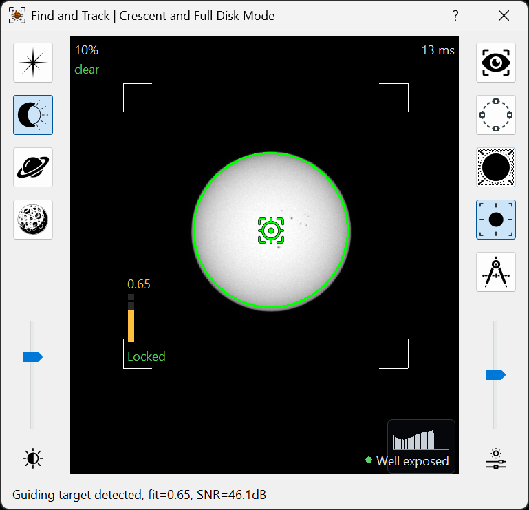
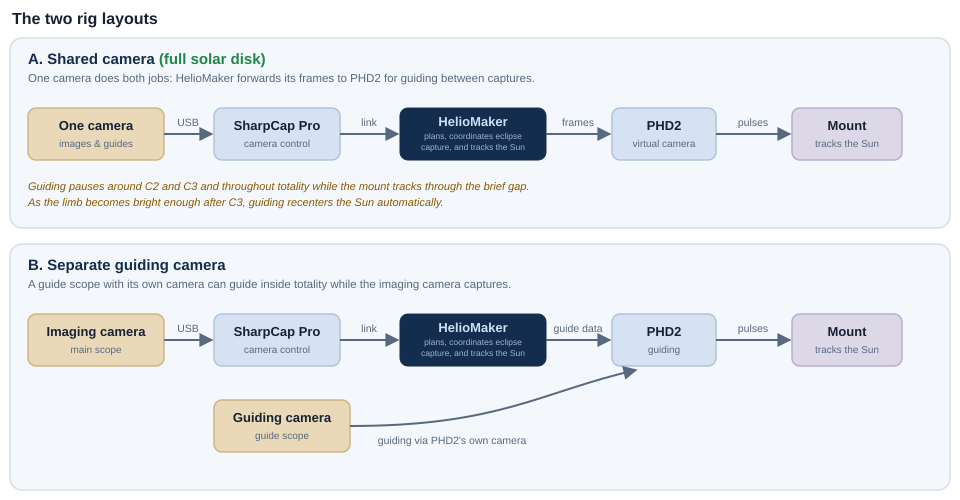
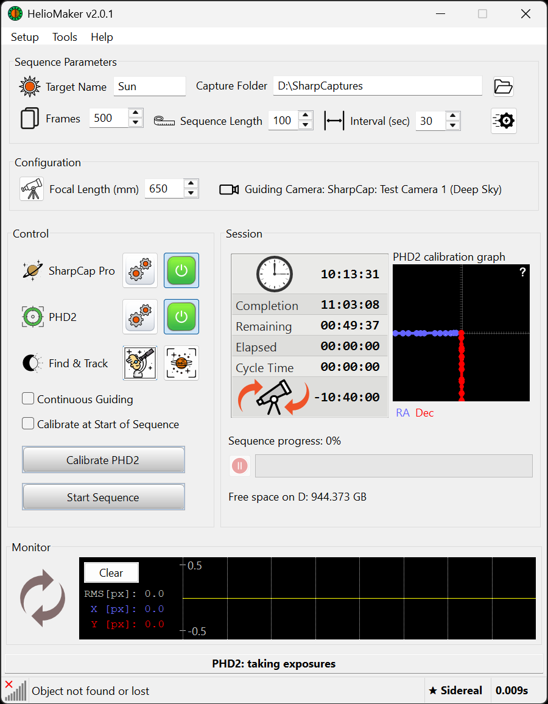

HelioMaker drives a specific chain of hardware and software. This page lists what you need and
helps you make the one choice that most affects how simple your rig is: how you guide.
Two guiding setups; the simpler one is usually the right one
You do not necessarily need a separate guide scope. HelioMaker's Shared camera
mode guides off your single main imaging camera, so there's one less camera to buy and only one solar
filter to manage. Guiding pauses around C2 and C3 and throughout totality, then
recenters the Sun automatically after C3. Choose a separate guide scope (with
its own camera and its own filter) if you specifically want guiding inside totality or
if the main camera will image only part of the solar disk at high magnification.
For full solar disk imaging, shared camera mode is usually the simpler choice.
Shared camera requires a full solar disk view
The eclipse automation currently uses HelioMaker's Sun detector in crescent and full solar disk modes. Shared camera
guiding therefore assumes that the main camera keeps the entire solar disk comfortably inside the frame during
the filtered guiding phases. If your main camera will show only part of the disk at high magnification, use a
separate guide scope and guide camera with a full solar disk view.

The shared camera workflow requires the complete solar disk to fit comfortably inside the main
frame so HelioMaker can detect, lock and guide on it reliably.
The chain
HelioMaker sits between your camera control software and your guiding software: SharpCap Pro
drives the main camera, HelioMaker detects and tracks the Sun and forwards guide corrections, and a custom
PHD2 fork guides the mount.

The two guiding layouts. Shared camera (A)
suits full solar disk imaging. A separate guiding camera (B) supports guiding inside totality or a main camera that
shows only part of the solar disk.

The working chain on HelioMaker's main screen. SharpCap operates the imaging camera, PHD2 guides
the mount, Find and Track locks the Sun, and Capture Folder sets the base capture location.
What you need
Main imaging telescope + fast planetary camera required
Your primary scope must use a fast planetary imaging camera supported natively by
SharpCap Pro. Select the camera through SharpCap's native camera support; do not use an ASCOM
camera driver. HelioMaker sends capture commands to SharpCap and receives the frames, while SharpCap
operates the main camera.
DSLR and mirrorless cameras are not supported by the current eclipse workflow. Its
automated exposure changes, timing and capture sequence are designed for directly supported planetary
cameras with fast readout and download rates.
Readout speed matters most during the central C2-to-C3 phases. Totality lasts only a few minutes, and the
diamond-ring, beads and corona recipes compete for that fixed interval. A camera that downloads frames
quickly can complete more planned HDR sets and capture more of those brief, unrepeatable moments. Run the
System benchmark test with the actual camera, capture resolution, data format
and storage drive before approving the plan.
Fast SSD capture storage recommended
Use a fast solid-state drive for the capture folder and have at least several tens of
gigabytes free for the run. High camera download rates, large frames and repeated HDR sets can generate data
quickly; a slow or nearly full drive can become the capture bottleneck even when the camera itself is fast.
HelioMaker estimates the required storage from the planned frame count and measured frame size. During
preflight, the Disk space check compares that estimate with the selected capture
drive's free space and warns when the available storage is insufficient. The System benchmark also measures
the capture drive's write performance, so test the same SSD and capture folder that will be used on eclipse
day.
Guiding: shared camera, or a separate guide scope choose one
Shared camera (full solar disk): one scope and one camera do both imaging
and guiding. PHD2 is fed by HelioMaker's Virtual Planetary Camera, which is set in Plan preferences. The
main frame must contain the complete solar disk with enough surrounding space for reliable detection. Nothing extra to
buy, and only one solar filter to manage. HelioMaker guides through the ordinary partial phases and
pauses guiding through the thin crescent and diamond ring contact windows and throughout
totality. As the photospheric limb becomes bright enough for reliable detection after C3, it
automatically recenters to the locked position. The mount tracks without guide corrections
for those few minutes, so you only need to manage the filter.
Separate guide scope: a
dedicated guide scope with its own guide camera and its own solar filter. A
short focal length is forgiving (roughly 150 to 200 mm) and copes with a few degrees of alignment error.
This setup is preferred when you want guiding to run inside totality or when the main camera uses
high magnification and shows only part of the solar disk. It adds a second camera and a second
filter to manage at exactly the right moments if guiding continues while the main filter is off.
Certified solar filter(s) required
Suitable solar filtration, such as ND 5.0 white light film, on the main scope for all
partial phases, and on the guide scope too if you use a separate one. What happens at totality
depends on the eclipse mode. Ordinary photographic ND filters are not safe solar
filters on their own. They may add attenuation behind a certified front-mounted solar filter, in which case
select the effective density of the complete stack in
Plan preferences. See Safety for the
filter rules; they are not optional.
Equatorial mount with tracking + autoguiding required
An equatorial mount that can be controlled through ASCOM, tracks and accepts autoguiding corrections, and is
well polar aligned using a daytime routine (see Prepare in
advance).
The custom PHD2 fork required
HelioMaker injects synthetic guide frames into a custom PHD2 build (the
2.6.14-solar line). A stock PHD2 will not work. See the About the custom PHD2 page in
HelioMaker's integrated help for where to get it and how it differs.
Motorized focuser recommended
A motorized ASCOM focuser configured in SharpCap lets HelioMaker request one guarded SharpCap
Refocus shortly before the corona appears. Before enabling the plan option, SharpCap Focus Assistant must
complete and save a successful solar focus scan on the physical eclipse rig. Without a motorized focuser, focus
manually and lock it. See Focusing.
A Windows PC with an accurate clock required
Running HelioMaker, SharpCap Pro and the custom PHD2 together. The PC clock must be accurate.
Synchronize it with a reliable network time source; the preflight checklist has a clock synchronization step. Size the PC, cabling and power for a
long unattended session in the field.
Test the whole chain together
Each piece can work alone and still fail in combination. Before travelling, test the complete workflow on your
actual eclipse rig: SharpCap driving the main camera, HelioMaker bridging, the custom PHD2 calibrating and
guiding on the Sun in your chosen shared or separate camera configuration, with frames landing on disk. → Prepare in advance